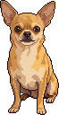

튜토리얼 시안 · 가르시아 초안(4단계)을 지금 왈슨에 맞춘 것 — 그림은 앱 도트 그림, 문구·조건은 지금 앱 그대로. 저장·전송 없음. 시안 모음
오늘 산책 안 가면
국물도 없어요
가입 없이 바로 시작하는 우리 강아지 산책 기록. 산책 한 번 다녀올 때마다 아지트 소품과 영수증이 쌓여요.
"산책 가면 삐짐 해제"

우리 개 워킹패스를
만들어 볼까요?
산책길에서 만난 견주가 보는 카드예요. 성향을 적어 두면 다른 강아지가 어떻게 다가오면 좋을지 알 수 있어요.
워킹패스는 언제든 키링 카드로도 바꿔 볼 수 있어요 — 조건을 채우면 실물 아크릴 키링으로 받아요.
산책할 때마다
내 방 소품이 채워져요
소품을 눌러 보세요. 무엇인지, 어떻게 생기는지, 우리 개가 어떻게 노는지 보여요.
초코네 아지트
킁킁 방명록
"공 던져 줘!"
오늘의 산책 영수증이
나왔어요
산책이 끝나면 인스타 스토리에 바로 올릴 수 있는 영수증과 아지트 소품이 생겨요.
WALK RECEIPT
산책한 강아지초코
시간 · 거리32분 · 1.8km
응가1번 치움
생긴 소품뼈다귀
앱 설치 없이 홈 화면에 추가
사파리는 아래 [공유] → [홈 화면에 추가], 크롬은 오른쪽 위 [⋮] → [홈 화면에 추가]를 누르면 앱처럼 바로 켜서 산책을 기록할 수 있어요.
사파리는 아래 [공유] → [홈 화면에 추가], 크롬은 오른쪽 위 [⋮] → [홈 화면에 추가]를 누르면 앱처럼 바로 켜서 산책을 기록할 수 있어요.